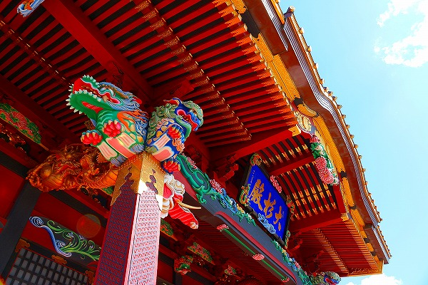

大杉神社である。
いわゆる
ド派手な装飾彫刻の神社である。
当サイトでは伝統的な装飾彫刻の寺社を紹介する機会が少なかったが、数々の常軌を逸した過剰な彫刻建築は珍寺に通ずるスピリッツが感じられる。
従って今後、積極的に紹介させていただく次第。
のっけっから目がチカチカするじゃねえかよ！とお嘆きの貴兄よ、ご心配なく！
これから先はもっと派手になるから！
入り口からして只事ではないオーラを存分に放出しまくりの神社である。
何と言っても強烈なのは鳥居の左右に鎮座している
巨大な天狗ヘッド。
どちらも御影石の巨大な原石がら彫り込んだもの。つまりお金がかかってるという事だな。
実はココ、数年前に偶然通りかかった際、この天狗ヘッドに驚愕し、思わず境内に乗り込もうとしたのだが、その時はほぼ全ての建物が修復中で中に入れなかったので今回再訪した、という訳なのだ。
そして数年ぶりに訪れてみれば偶々
秋の大祭の真っ最中だった。
鳥居を潜ったらいきなりお馬さんがぐるぐる回っていた。
聞けばこの後、神輿の渡御があるのだとか。
まあ、今回は修復が完了した大杉神社の建物を見る、というのがメインミッションなのだが、折角なのでお祭もチョイと拝見しときましょうか。
いかにも神社の祭、といった風情の若者が鳥居前に集合していた。
印象としては
着物のグレードが異常なまでに立派だった。
特に年配の男性が身につけていた着物は思わず「殿サマかっ！」と叫びたくなるほど。
なるほど、この神社にしてこの着物あり、といったところか。
おおお、天狗サマもいらっしゃるのか。記念撮影中ですか。
そんなこんなで神社の建物を見ていこう。
麒麟門。
元々は正徳年間に建てられたというこの門は何度かの焼失を経て、平成22年に280年ぶりに再建したもの。
もう、のっけから
気絶しそうな勢いの過密な装飾。鼻血ブー！
まるで日光の陽明門のよう。
聞けばこの大杉神社は
あんば日光と呼ばれているそうな。
「あんば」とはこの大杉神社がある地名。日光はいわずと知れた東照宮。つまりここに来れば日光に行かずともよし、という意味なのだ。
額には夢顕と書かれている。
麒麟門の名のとおりあちこちに麒麟の彫刻が施されている。その色彩ったら、もう。
実際には麒麟門は潜り抜けられないのでこちらのスロープから境内に入ることになる。
脇のサブ門、とはいえこんな感じ。油断なるまじ。
麒麟門を横から見るとこんな感じ。
門に施された彫刻。赤ちゃんアイドルか？
赤ちゃん力士か？
門の脇の塀も油断ならない。
こんな彫刻が施されているのだ。
何だろコレ？達磨さんが好きすぎてハグしてるのかな。
そのほか考えうる限りの目出度い図像を彫刻にしたためている。
闘鶏？
大根とネズミ
で、いよいよ拝殿である。
いかがであろう、このコテコテっぷり。
首里城に東照宮を足して2で掛けた感じ。
頭がクラクラしてきます。

本殿、拝殿共に文化13（1813）年に建立されたもの。まさに
ジャパニーズバロックと呼ぶしかない過剰で過密な装飾だ。
このような過剰な社寺彫刻は日光東照宮に代表されるように
江戸時代の東日本で独自に花開いたムーブメントといっていいだろう。
ド派手な装飾建築が
江戸彫工と呼ばれる寺社彫刻の専門家の手によって熟成されていったのだ。
ちなみにこの大杉神社の本殿、拝殿の彫刻は関東でも指折りの彫工であった島村家本流の二代目、
島村円鉄。
近在の成田山新勝寺の三重塔をはじめ千葉や茨城に大作を残した
江戸コテコテ建築界の巨匠なのだ。
例えばこの柱飾り。象と獅子と龍が三方に付いていて、しかもこの裏側には金ピカの龍がのた打ち回っている。
さらにこの唐破風の軒下。物凄く細かく、かつ大きな花が彫刻されている。
下に立つとあまりの大きさに落ちてくるんじゃないか、落ちてきたらひとたまりもないな、と気が気じゃないレベル。
拝殿前には
不思議な桃の形をしたオブジェがあった。
これは近年設置されたもので、悪縁切りの齋庭（ゆにわ）というのだそうな。
呪文の書かれた土器をここに叩きつけて割ることで悪縁が切れるのだとか。
その隣には桃オブジェの三連荘。こちらは撫でると厄難が去るとか。
神楽殿では囃子が奉納されていた。
拝殿の左にも立派な社殿があったが何故かこの社殿だけは修復されていなかった。よく見るとこれも
かなりコテった彫刻なのに。
近くにＪＲＡのトレーニングセンターがあるため
競馬関係者や競馬ファンの必勝祈願の参拝も多い。
日本画の名作を髣髴とさせる鶴の群像のレリーフ。うっとりするほど美しい。
牡丹、だろうか。細かく精密なだけでなく、
彫りが深いので立体感が強烈だ。
さて。ここからが本題といえば本題。
拝殿の裏手に回ると本殿をぐるりと囲むように
瑞垣と呼ばれる塀がある。
その瑞垣に
二十四孝が彫りこまれているのである。
二十四孝とは中国に伝わる親孝行のベスト24エピソードであり、日本でもしばしば寺社彫刻の題材として採用される。
勿論中国や東南アジアの中華系寺院などでも頻繁に見ることが出来る。
この二十四孝が島村円鉄の手によって生き生きと再現されているのだ。
そんな中で最も衝撃的なのがこちら。
唐婦人の図である。
嫁の唐婦人が歯のない
姑に母乳を飲ませているという場面。
隣でガキンチョが「母ちゃん、ばばあにばっか飲ませないでオラにも飲ませてけろ！」と袖を引っ張るのもお約束の図像なのである。
例


こちらは
臾黔婁（ゆけんろう）。
父の大病に際して、便の味で病状が判るとの医者の説明を聞き、
父ちゃんの便を舐めてみました、の図。
チョット判りにくいが、右の黄色い着物の人が臾黔婁。勺のしたにある黒い物体が
例のブツということになろうか。そんなものを神社の彫刻にしたためるなんて衝撃的過ぎるぞ！
これも私の好きなエピソード、
剡子（ぜんし）。
とある猟師が鹿を討とうとしたら、鹿の皮をかぶった人間だった。
両親の眼病を治すため効き目のある鹿の乳を採ろうと鹿の真似をしていたのだという。
猟師は親孝行の想いに感動したというが、この人
一体鹿の皮をかぶって何をしようとしていたのだろう？
舜（しゅん）はあまりにも親孝行なので畑を耕そうとすると象が現れ、舜を手伝った。ああ、
スタンド使いなんですね。

これらのステキすぎる二十四孝の彫刻は透かし彫りになっており、ちゃあんと裏側も彫ってあるところが凄い。
本殿の妻側。もう、
ちょっとした隙間は全部彫刻で埋め尽くしてやる、という気迫がビンビン伝わってくる。
空間恐怖症なのかな。
扉にも彫刻が。
この鳥（鶯？）はひときわ綺麗だった。
こちらは
呉猛。
蚊帳も買えない貧乏な呉猛。
親が蚊に刺されないように
自らが身を挺して蚊の餌食に。
何か親孝行とかそういうレベルを超えちゃった狂気を感じますね。
亡き母の像を作り、供養する
丁蘭の図。
話には続きがあって、丁蘭の妻がうっかりこの母の像を焦がしてしまったら血が流れ、その妻の髪の毛が抜け落ちてしまったとか。
妻が3年侘びを入れたら木像は元通りに直ったとか。
これもまたチョット行き過ぎ感出ちゃってますね。
王裒。
皇帝の怒りを買って亡くなった父の墓前で無念の余り泣き過ぎて墓の隣の木が枯れちゃったという話。
段々凄すぎてホラーっぽくなってるんですけど…。
…このように少しやりすぎじゃあないか、とも思えるほど
誇張された孝行話が延々と続く。
ただし、これらのやりすぎ親孝行プレイを見ていると、孝行されている親に対して「いくらなんでも甘えすぎだろ！」と思ってしまう。
だって、息子が蚊に刺されまくって本人スヤスヤとか、凍った川を体温で溶かして採った魚をパクパク食べたり…
普通の神経だったらスヤスヤパクパクできます？
…この二十四孝という話がどこから生まれたのか知らないが、ひょっとしたら時の権力者が親孝行を推奨しつつ、その実…
「領主といえば親も同然。領民共、ワシにも
身を挺して孝行せいよ！」
…と教化しようとしたのかも知れないっすね。
まあ、いずれにせよ二十四孝はその
噴飯モノのエピソードと超絶の彫刻テクが堪能できる素晴らしいギミックなのでもし見かけたら隅々までお見逃しなく。
柱飾りの象さん。オレンジ色のはTシャツか？
んで一回りしてまた拝殿へ。
見れば見るほど派手だなあ。
こういうのをプラモデルにしたら面白いだろうねえ。
祭の方は餅撒きをして盛り上がってました。